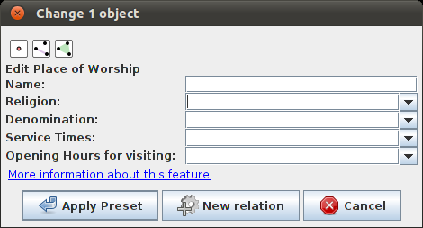
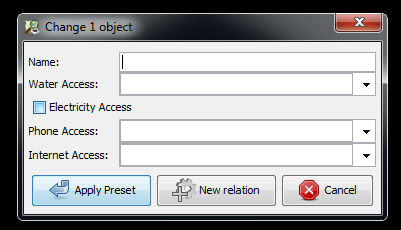
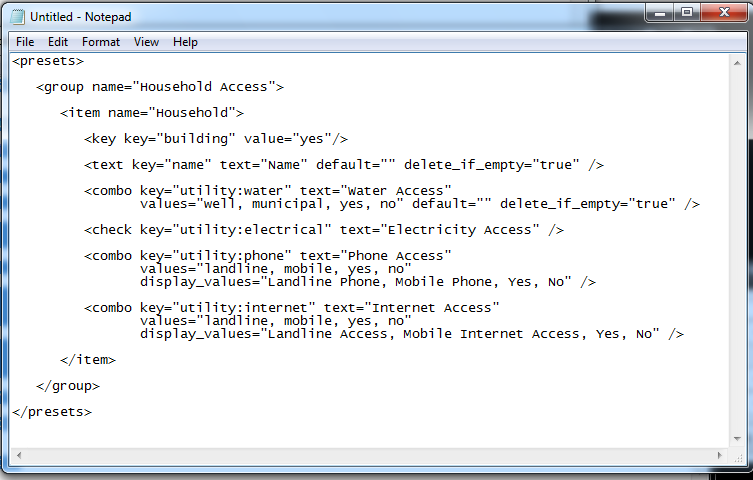

Module 4: Creating JOSM File Presets¶
Learning Objectives
Understand tags
Understand XML
Understand keys and values
Make presets
Put preset files into JOSM
Apply new presets to an object
By now you probably have a good understanding of how objects are drawn in JOSM, and how to add information to these objects to describe what they are. You add attributes to a point, line or shape by attaching tags to it. By using the JOSM presets menu, you can easily attach the correct tags to an object by finding the type of object you want to create through a menu, and then filling in information in a form. In this module we will review tags and presets once more, and then learn how we can create our own presets menus to use in JOSM.
2. Introduction to XML¶
In order to create our own Presets menu, we first need to understand a language called XML. XML, which stands for Extensible Mark-up Language, is a language similar to HTML. The key difference is that XML is designed to carry data, not display it. Many applications on the internet use XML to transmit data, including OSM. XML uses elements, and each element can contain child elements inside it. For example, let’s imagine that we want to create an XML file that contains data about a restaurant menu. We must create a root element to contain all the data about our menu. Our root element will have an opening and a closing tag, like this:
<menu>
... whatever data we want to include in our menu ...
</menu>
Information is contained inside an element, and within each element there can be more elements.
<menu>
<item name=“Hamburger”>
<cost>400</cost>
<description>Delicious beef patty with cheddar cheese</description>
</item>
<item name=“Nasi Goreng”>
<cost>200</cost>
<description>Traditional Indonesian Fried Rice</description>
</item>
</menu>
In this example we have placed two <item> elements within our <menu> element to describe two different items that are contained in the menu. Each item contains two more elements in them, <cost> and <description>. Notice also how we have written name=”Hamburger” inside the opening <item> tag. This is called an attribute, and adds information about the element.
XML Terminology¶
root element: the outermost element of an XML document, which describes what is contained
element: any XML object, contained by opening and closing tags, such as <item>…data…</item>
tag: something contained in brackets, such as <item>. <item> is the opening tag of an element, and </item> is the closing tag.
attribute: a piece of information contained inside a tag, such as name=“Hamburger”
Using XML to hold and transmit data is great because it is easy to understand for computers. To provide one more example, this is what the XML might look like for the point we created in JOSM previously.
<osm>
<node id="6799999167" lat="-8.7542864" lon="123.5516224" user="rukeli" uid="923929" visible="true" version="4" changeset="8343565" timestamp="2011-06-04T21:50:42Z">
<tag k="name" v="Some Clothing Shop"/>
<tag k="shop" v="clothes"/>
</node>
</osm>
This XML has a root element <osm> which indicates that OSM data is contained inside. Then it has one <node> element which is the OSM way of describing a point. The node has numerous attributes, including a unique id number, the coordinates of the point, the user who created the point, and some additional information which we will not discuss right now. Between the opening <node> tag and the closing </node> tag there are two more elements of type <tag>. Each <tag> has an attribute k and an attribute v. These are the keys and values that we added in JOSM. Notice that the <tag> elements don’t have a closing </tag>. This is because they don’t have any other elements contained within them, but instead have a forward slash indicating that it does not require a closing tag. <tag …attributes />
3. JOSM presets files¶
As you’ve already discovered, JOSM comes pre-loaded with a presets menu that includes most common types of geographic options. But sometimes you want to add additional presets for specific information that you want to collect. You can create your own presets menu by writing it in XML, and then loading it in JOSM. First, let’s look at how we can load additional presets menus into JOSM.
Open JOSM and open the Preferences menu by going to .
Click on the third icon from the top which looks like this:
Click on the third tab labelled Tagging Presets.
Select Buildings by Kate Chapman and click on the right arrow button to add it to Active presets.
Click OK.
Restart JOSM.
Create a new layer by going to .
Create a point and make sure it is selected.
Go to the Presets menu. You should now see the presets that you added at the bottom.
Click on to see the the building presets form.
When we added these new presets through the preferences menu, what we were doing is adding an XML file that describes how the new menu should behave. In the next sections, we will learn how to create our own XML presets file that we can load into JOSM.
4. A sample presets file¶
To understand how a presets file is written, let’s first look at the XML for one of the pre-loaded presets in JOSM. When you go to the presets menu and select you will see a form like this:
The XML for this form looks like this:
<item name="Place of Worship" icon="presets/church.*" type="node,closedway,relation">
<link href="http://wiki.openstreetmap.org/wiki/Tag:amenity=place_of_worship" />
<label text="Edit Place of Worship" />
<key key="amenity" value="place_of_worship" />
<text key="name" text="Name" default="" delete_if_empty="true" />
<combo key="religion" text="Religion" values="bahai,buddhist,christian,hindu,jain,jewish,muslim,sikh,spiritualist,taoist,unitarian,zoroastrian" default="" delete_if_empty="true" />
<combo key="denomination" text="Denomination" values="anglican,baptist,catholic,evangelical,jehovahs_witness,lutheran,methodist,mormon,orthodox,pentecostal,presbyterian,protestant,quaker,shia,sunni" default="" delete_if_empty="true" />
<combo key="service_times" text="Service Times" values="Su 10:00,Su 10:30,Su 11:00" default="" delete_if_empty="true" />
<combo key="opening_hours" text="Opening Hours for visiting" values="24/7,Mo-Fr 08:30-20:00,Tu-Su 08:00-15:00;Sa 08:00-12:00" default="" delete_if_empty="true" />
</item>
This may look complex, but it is not as difficult as it may seem. Let’s walk through it line by line.
The first line is the opening tag of our root element <item>. There are several attributes describing the element.
name=”Place of Worship” |
The name of what you are creating. |
icon=”presets/church.*” |
The icon of the object. PNGs are the most effective in OSM since they are compressed low-colour graphics with transparent backgrounds. |
type=”node,closedway,relation” |
The types of object that this preset can be applied to. Node means it can be applied on a point, way means it can be applied to a line, closedway means it can be applied to a shape, and relation means it can be applied to a relation, which is a type of OSM object we have not discussed. Notice that way is not an option here, because a place of worship cannot be a line - it must be a point or a shape. |
The second line provides a link to the OSM wiki page for this type of location.
<link href=”http://wiki.openstreetmap.org/wiki/Tag:amenity=place_of_worship” />
The third line has the tag <label> and describes what text should be shown at the top of the form.
<label text=”Edit Place of Worship” />
The fourth line describes a tag that will automatically be applied to the object when the preset is selected. In this case, we want the object to have the tag amenity=place_of_worship.
<key key=”amenity” value=”place_of_worship” />
The fifth line describes the first thing that will be shown on our form, and how to create a tag when it is filled in. The tag is <text> which indicates that the form should have a text box for the user to fill in. The attribute key=“name” describes what key should be used when the tag is created. The value will be whatever the user enters in the text box. The attribute text=“Name” describes what should be written on the form next to the text box. The final attribute indicates that no tag should be created if the text box is left empty.
<text key=”name” text=”Name” default=”” delete_if_empty=”true” />
The lines after this are similar, but instead of text boxes, drop-down boxes are created where the user can select from different options. The tag used for this is <combo>
The final line of the XML is the closing tag </item>
5. Creating your own presets file¶
Now follow along as we create our own presets file. We will create an example presets menu which will allow us to tag buildings or points according to the type of utilities access that they have available. For this, let’s invent some new tags:
Key |
Possible Value |
|
|---|---|---|
utility:water |
well, municipal, yes, no |
Does the household have access to water? well indicates it has access to well water. municipal indicates it has pipes running to it. If we want to be less descriptive, we can select yes or no to indicate if the building has water access |
utility:electricity |
yes, no |
Does the household have electrical access? |
utility:phone |
landline, mobile, yes, no |
Does the household have phone access? landline indicates that there is a hard phone line in the house. mobile indicates that the household has a mobile phone. If we want to be less descriptive, we can use yes or no |
utility:internet |
landline, mobile, yes, no |
Same values as for phone, this will indicate if the household has internet access |
When the preset we create is selected, we will also automatically add the tag building=yes, and we will create a tag with the key name that the user can fill in with using a text box.
Now look at the possible tags we have described in the table above. What is the best way to represent each of these on the form? For name, we want to create a text box, because the user can fill in any name that they want for this tag.
For utility:water, utility:phone, and utility:internet, there are four possible values that the user can select from on our form, so the best way to add this is with a combo box - that is, a drop-down menu where the user can select one of the options. The tag utility:electrical only has two possible values, yes or no, so the best way to show this on our form is with a checkbox, although we could use a drop-down box if we wanted as well. When we are finished our form should look like this:
Open a text editor and follow along as we create the XML for this preset. A simple and common editor to use on Windows is called Notepad. DO NOT use a word processing program like Microsoft Word.
First, we need to create a root element in our XML so that JOSM knows it is a presets file.
Next let’s create an element called <group>. This is not actually necessary because we are only creating one preset, but it will demonstrate how we can create submenus with many different options on our presets menu. Don’t forget to add the closing tags </group> and </presets> to your elements.
Now we can create an item on our menu. We want to create an <item> element inside of the group element. Add the following text:
<item name="Household">
</item>
Inside the <item> element we will add the text box, combo boxes and check box that we want on our form. Add the following inside your <item> element:
<item name="Household">
<key key="building" value="yes"/>
<text key="name" text="Name" default="" delete_if_empty="true" />
<combo key="utility:water" text="Water Access" values="well, municipal, yes, no" default="" delete_if_empty="true" />
<check key="utility:electrical" text="Electricity Access" />
<combo key="utility:phone" text="Phone Access" values="landline, mobile, yes, no" display_values="Landline Phone, Mobile Phone, Yes, No" />
<combo key="utility:internet" text="Internet Access" values="landline, mobile, yes, no" display_values="Landline Access, Mobile Internet Access, Yes, No" />
</item>
When you are finished your file will look like this:
Much of this is similar to what you saw previously. Let’s analyse it. Inside the <item> element we have created six more elements:
<key>
<text>
<combo>
<check>
<combo>
<combo>
Can you guess what each of these elements do? They create different items on our presets form in JOSM. The first line, <key key=”building” value=”yes”/>, does not display anything on our form, but tells JOSM to automatically apply the tag building=yes to an object when this preset is selected.
The second line, <text key=”name” text=”Name” default=””delete_if_empty=”true” />, creates a text field with the key name, as we saw when we looked at the presets XML in the previous section.
We have three <combo> elements and each element has several attributes. key indicates what key should be created for the tag. Text indicates what text should be displayed on our form. Values are the possible values that the user can select in the drop-down box. And we’ve added something new - the attribute display_values, which let’s us show different text in the drop-down boxes than the values that will be created. This is useful if we want the form to be more descriptive about the options a user can select, or if we want the display values to be in a different language from English.
Lastly, we’ve added one new element, a checkbox. The code for this is simple, <check key=”utility:electrical”text=”Electricity Access” />. This creates a check box on our form. When it is selected, JOSM will add a tag to our object that says utility:electrical=yes.
Finally, let’s save the XML file so that we can load it into JOSM. In Notepad, go to .
Type in household_access.xml as the filename.
In the box that says Save as type: be sure to select All Files, because we don’t want to save the file as a text document, but rather as an XML document.
Click Save.
6. Try It!¶
Now let’s open our presets file in JOSM and see how it looks!
Open the Preferences in JOSM and go to Tagging Presets, as you did previously.
On the right side next to Active presets click on the + button.
Type Household Presets into the Name field.
Next to URL / File, open the xml file that you just created.
Click OK, and OK again to save your preferences.
Restart JOSM.
Create a new layer and add a point.
Go to the Presets menu. You should see the menu that you just created!